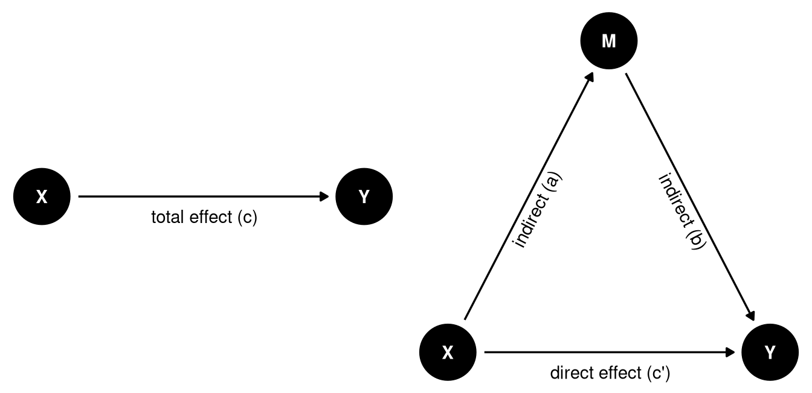
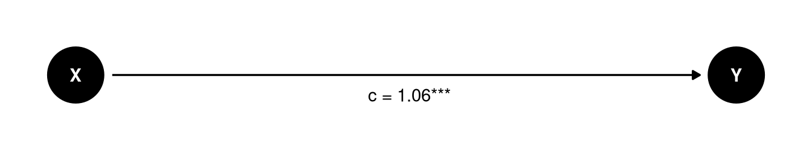
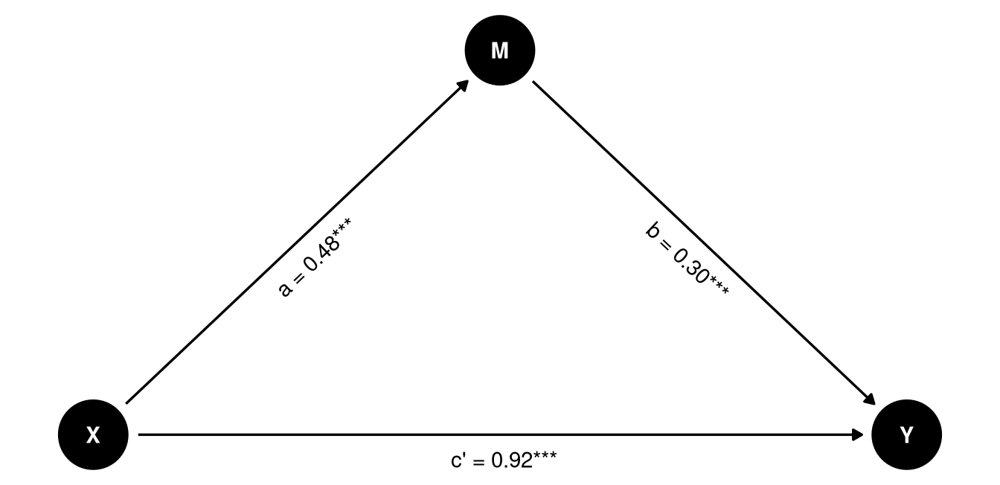
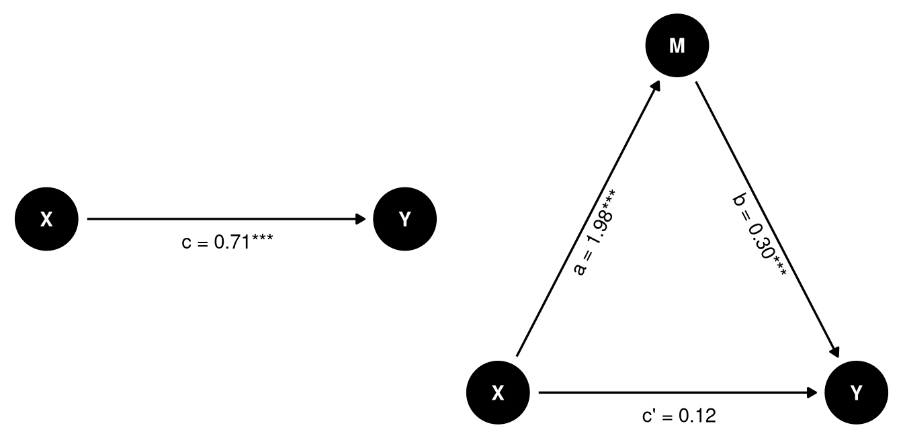
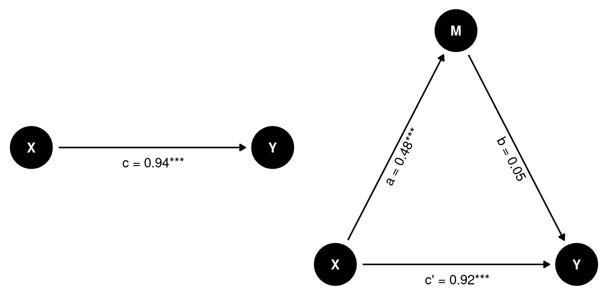

Mediation Analyses
Conducting simple mediation analyses in R
Introduction
In this tutorial, we will give a preliminary introduction on how to conduct simple mediation analyses in R. We will focus on running multiple regression analyses manually, to explain the concept of mediation and how to test for its significance. In practice, it is often recommended to use specialized packages for mediation analyses, but to develop a good intuition for the concept, you should first understand the basics.
What is mediation?
We are often interested in explaining a relationship or causal effect between two variables (e.g., X and Y). Many theories suggest that X does not necessarily directly influence Y, but that this effect is mediated by a third variable, which we can call M (for Mediation). We can visualize this interplay between the three variables like so:
In the left figure we see the total effect of X on Y. Here we only have one path from X to Y. In mediation analysis, the total effect is referred to as c.
In the right figure, we see a mediation model, where the effect of X on Y is mediated by M. This gives us two different paths for how X to have an effect on Y:
- direct effect. The direct path
X -> Y, referred to as c’. - indirect effect. The indirect path
X -> MandM -> Y, referred to as a and b respectively. We can calculate the indirect effect by multiplying both arrows (a * b)
The mediated model can help us distinguish between different scenarios:
- Full mediation: Only the indirect effect (a * b) is significant.
- No mediation: Only the direct effect (c’) is significant.
- Partial mediation: Both the direct and indirect effects are significant
- No effect: Neither the direct nor the indirect effect is significant.
Note of caution: Theoretically, mediation models almost always suggest some sort of “causal chain”. Yet, the analysis itself cannot prove causality. The same caution applies as discussed in the causality section.
Packages and simulated data
library(tidyverse)
library(sjPlot)For this tutorial we are going to simulate some data that align with the Figure presented above. You don’t need to understand this process, and can just run the code to create the data.
set.seed(42)
n <- 500
X <- rnorm(n, mean=3, sd=1)
M <- 0.5*X + rnorm(n, 0, 2)
Y <- 0.3*M + 0.8*X + rnorm(n, 0, 3)
d <- tibble(X,M,Y)
NoteIf you want to know how this simulation works
Here is a brief explanation of the data simulation code:
- A seed is a starting point of the random number generator. Think of a random process in a computer as a jump in a random direction: as long as you’re starting point is the same, you’ll end up in the same place. By setting a specific seed, we thus ensure that the random data we generate is the same for everyone running this code. The number
42is a common but arbitrary choice (it’s a pop-culture reference) - Create a random variable
Xthat is normally distributed (mean = 3, sd = 1). - Create a variable
Mthat is based onX, but with random noise. Note that we’re actually using the regression equation here. With0.5*Xwe say that for every unit increase in X, M should go up by 0.5 (so \(b = 0.5\))). Withrnorm(n, 0, 2)we add a residual (mean = 0, sd = 2) to the equation. We could also have added an intercept, but we left it out for sake of simplicity. - Create a random variable
Ythat is based onM(\(b = 0.3\)) andX(\(b = 0.8\)), with random noise. - This gives us a data set in which
XinfluencesYboth directly and indirectly throughM.
Simple regression analyses
Let’s first look at the model without the mediator M.
m_total <- lm(Y ~ X, data = d)
tab_model(m_total)| Y | |||
|---|---|---|---|
| Predictors | Estimates | CI | p |
| (Intercept) | -0.48 | -1.32 – 0.36 | 0.263 |
| X | 1.06 | 0.80 – 1.33 | <0.001 |
| Observations | 500 | ||
| R2 / R2 adjusted | 0.109 / 0.107 | ||
This gives us the total effect of X on Y.

Now let’s look at the model with the mediator M. We can break this model down into two separate regression models:
- Model 1:
Ypredicted byXandM. - Model 2:
Mpredicted byX.
m1 <- lm(Y ~ X + M, data = d)
m2 <- lm(M ~ X, data = d)
tab_model(m1, m2)| Y | M | |||||
|---|---|---|---|---|---|---|
| Predictors | Estimates | CI | p | Estimates | CI | p |
| (Intercept) | -0.48 | -1.30 – 0.34 | 0.250 | 0.01 | -0.57 – 0.59 | 0.973 |
| X | 0.92 | 0.65 – 1.19 | <0.001 | 0.48 | 0.30 – 0.67 | <0.001 |
| M | 0.30 | 0.18 – 0.43 | <0.001 | |||
| Observations | 500 | 500 | ||||
| R2 / R2 adjusted | 0.148 / 0.145 | 0.049 / 0.047 | ||||
Let’s visualize the paths in the mediation model:

We can see that all paths are significant, suggesting that there is both a direct and indirect effect of X on Y. In other words, this is a partial mediation.
We can calculate the indirect effect by multiplying the coefficients of the two paths:
\[a \times b = 0.482 \times 0.301 = 0.15\]
WarningTesting the significance of the indirect effect with the Sobel test
A method to test whether the indirect effect is statistically significant is the Sobel test. It is a somewhat outdated method, but its relatively easy to understand and intuitive, so we include it here for educational purposes. Calculating the correct confidence interval for an indirect effect is not as straightforward and is better handled with more advanced methods such as bootstrapping or Monte Carlo simulations. There are packages in R that can do this (such as bruceR or lavaan), but we will not cover them at this point.
The Sobel test computes a z-statistic based on the regression coefficients (a and b) and their standard errors (sa and sb):
\[ z = \frac{a \times b}{\sqrt{b^2 \times s_a^2 \;+\; a^2 \times s_b^2}} \]
We can calculate this in R using the results from our earlier regression models. Notice in the formula that we need the values for:
a: the effect of X on Ms_a: The Standard Error ofab: the effect of M on Ys_b: The Standard Error ofb
There are two ways to get these values. One is to simply look them up manually in the regression tables, and enter the values directly in our code.
# Look up the coefficients of the regression model
summary(m1)
summary(m2)
a <- 0.4821 # effect of X on M
sa <- 0.0952 # SE of a
b <- 0.3015 # effect of M on Y
sb <- 0.0629 # SE of bAlternatively, we can also directly extract the values. We then first extract the table of coefficients from the model using summary(m1)$coef. Given this coefficients table, we can get the value for a specific row and colums using [row,column].
# Extract coefficients and standard errors
a <- summary(m2)$coef[2,1] # effect of X on M
sa <- summary(m2)$coef[2,2] # SE of a
b <- summary(m1)$coef[3,1] # effect of M on Y
sb <- summary(m1)$coef[3,2] # SE of bNow we can calculate the formula:
# Sobel test
## Formula for z-score
sobel_z <- (a * b) / sqrt((b^2 * sa^2) + (a^2 * sb^2))
## Corresponding p-value
p_value <- 2 * (1 - pnorm(abs(sobel_z)))
## Printing the results
cat("Sobel z-score:", round(sobel_z, 3), "\n",
"p-value:", signif(p_value, 3))Sobel z-score: 3.48
p-value: 0.000502
TipFull mediation example
Full mediation
Since we’re working with simulated data, we can make a small adjustment to our code to simulate a scenario where M fully mediates the effect of X on Y. Notice that our simulation is almost identical, except that we set the coefficient of X on Y to 0.
set.seed(42)
n <- 500
X <- rnorm(n, 3, 1)
M <- 2*X + rnorm(n, 0, 2)
Y <- 0.3*M + 0*X + rnorm(n, 0, 3)
d_full <- tibble(X,M,Y)To nicely interpret the models side-by-side, we’ll add some labels and drop the confidence intervals.
m_total <- lm(Y ~ X, data=d_full)
m1 <- lm(Y ~ X + M, data=d_full)
m2 <- lm(M ~ X, data=d_full)
tab_model(m_total, m1, m2,
dv.labels=c("Y ~ X", "M ~ X", "Y ~ X + M"), show.ci = FALSE)| Y ~ X | M ~ X | Y ~ X + M | ||||
|---|---|---|---|---|---|---|
| Predictors | Estimates | p | Estimates | p | Estimates | p |
| (Intercept) | -0.48 | 0.263 | -0.48 | 0.250 | 0.01 | 0.973 |
| X | 0.71 | <0.001 | 0.12 | 0.522 | 1.98 | <0.001 |
| M | 0.30 | <0.001 | ||||
| Observations | 500 | 500 | 500 | |||
| R2 / R2 adjusted | 0.052 / 0.050 | 0.094 / 0.090 | 0.465 / 0.464 | |||

Here we do have an effect of X on Y, but when we control for M, the effect of X on Y is no longer significant. Since both the effect of X on M and M on Y are significant, this is a case of full mediation.
TipNo mediation example
No mediation
We can also simulate a scenario where M has no effect on Y. We do not make the effect of M on Y zero, but we set the coefficient to a very small value, so that it is not significant.
set.seed(42)
n <- 500
X <- rnorm(n, 3, 1)
M <- 0.5*X + rnorm(n, 0, 2)
Y <- 0.05*M + 0.8*X + rnorm(n, 0, 3)
d_no_mediation <- tibble(X,M,Y)
m_total <- lm(Y ~ X, data=d_no_mediation)
m1 <- lm(Y ~ X + M, data=d_no_mediation)
m2 <- lm(M ~ X, data=d_no_mediation)
tab_model(m_total, m1, m2,
dv.labels=c("Y ~ X", "M ~ X", "Y ~ X + M"), show.ci = FALSE)| Y ~ X | M ~ X | Y ~ X + M | ||||
|---|---|---|---|---|---|---|
| Predictors | Estimates | p | Estimates | p | Estimates | p |
| (Intercept) | -0.48 | 0.250 | -0.48 | 0.250 | 0.01 | 0.973 |
| X | 0.94 | <0.001 | 0.92 | <0.001 | 0.48 | <0.001 |
| M | 0.05 | 0.414 | ||||
| Observations | 500 | 500 | 500 | |||
| R2 / R2 adjusted | 0.091 / 0.089 | 0.092 / 0.089 | 0.049 / 0.047 | |||

In this case, the effect of X on Y is significant, but the effect of X on M is not. So there is no mediation effect. The full effect of X on Y is direct.